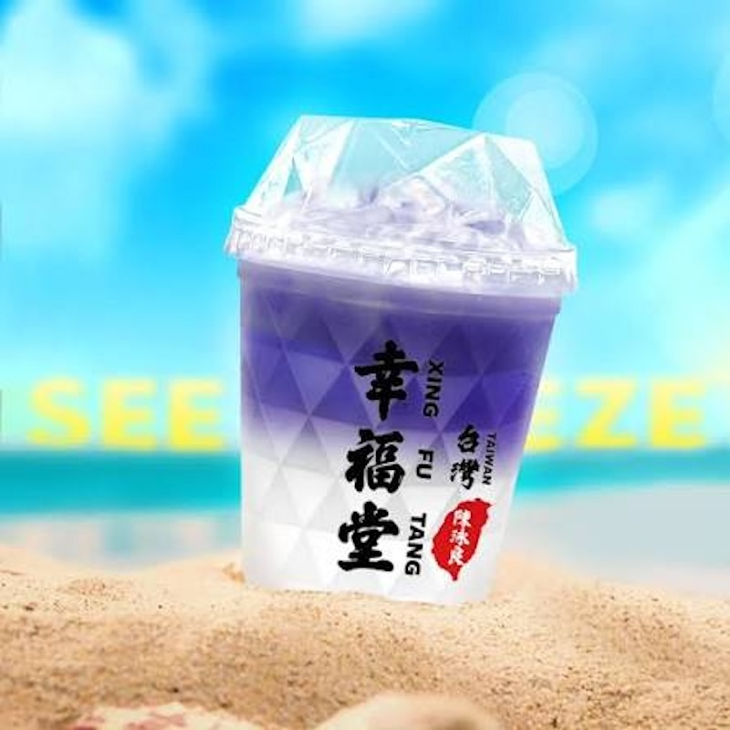

Type: 🧋 Boba
Address: 2476 Pleasant Hill Rd, Duluth, GA 30096
Hours: 12–9:30 PM

My go-to order is the "Sea Breeze" — a refreshing butterfly tea yogurt drink with a hint of citrus. I'm not usually one for sweet drinks, but the sweetness isn't overpowering, and the yogurt gives it a nice tangy flavor.
🌸 Butterfly pea flower tea is a caffeine-free herbal tea with a vivid blue color that turns purple with citrus.
It's not the most popular item on the menu, as compared to boba drinks, but it's currently my personal favorite.
📝 Note: They also serve smoothies and light snacks, but I haven't tried them yet.
© 2026 Duluth Drinks Guide